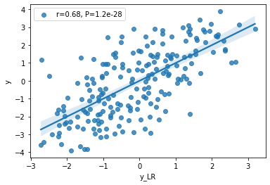

An Introduction to rePLS
Install
pip install rePLS
Usage
from rePLS import rePLS, rePCR, reMLR
import numpy as np
n_samples, n_features, n_outcomes, n_confounders = 100, 10,5,2
n_components = 2
rng = np.random.RandomState(0)
Y = rng.randn(n_samples,n_outcomes)
X = rng.randn(n_samples, n_features)
Z = rng.randn(n_samples, n_confounders)
reg = rePLS(Z=Z,n_components=n_components)
reg.fit(X,Y)
Y_pred = reg.predict(X,Z)
Example: Least squares and residual least squares
import numpy as np
from rePLS import rePLS,reMLR
import matplotlib.pyplot as plt
from sklearn.linear_model import LinearRegression
rng = np.random.RandomState(0)
# generate x,y
N = 200
slope = 3
intercept = -1
x = np.random.uniform(-1,1,N)
y = x*slope + intercept
plt.plot(x,y,'r')
# x,y are affected by confounders
confounders = np.random.randn(*x.shape)*1.5
x = x + np.random.randn()*confounders
y = y + np.random.randn()*confounders + np.random.rand(*x.shape)*2
plt.scatter(x,y)
# using linear regression to find out relationship between x,y
x = np.expand_dims(x, axis=1)
lr = LinearRegression()
lr.fit(x,y)
y_pred = lr.predict(x)
plt.plot(x,y_pred,'g')
plt.legend(['True','Observe','OLS'])
# using residual linear regression
confounders = np.expand_dims(confounders, axis=1)
reg = reMLR(Z=confounders,n_components=0)
reg.fit(x,y)
y_plot_pred2 = x@reg.residual_model.coef_
y_pred2 = reg.predict(x,confounders)
plt.plot(x,y_plot_pred2,'k')
plt.legend(['True','Observe','OLS','reMLR'])

Compare correlation coefficient
import pandas as pd
import seaborn as sns
import scipy.stats as stats
r, p = stats.pearsonr(y,y_pred)
df = pd.DataFrame({'y':y, 'y_LR':y_pred, 'y_reMLR':y_pred2})
sns.regplot(x="y_LR", y="y", data=df);
plt.legend([f'r={r:.2f}, P={p:1.1e}'])

r, p = stats.pearsonr(y,y_pred2)
sns.regplot(x="y_reMLR", y="y", data=df);
plt.legend([f'r={r:.2f}, P={p:1.1e}'])